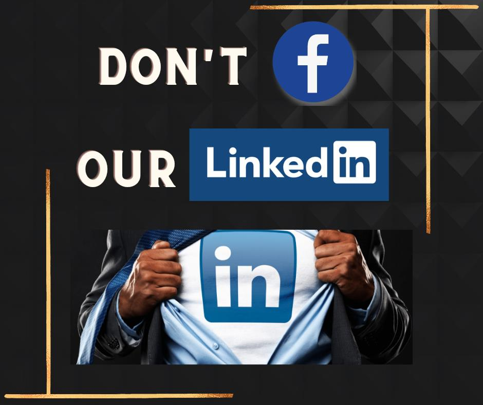
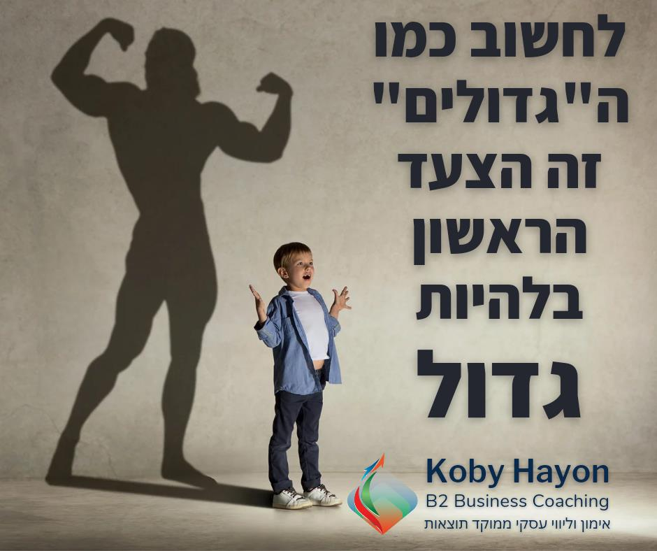
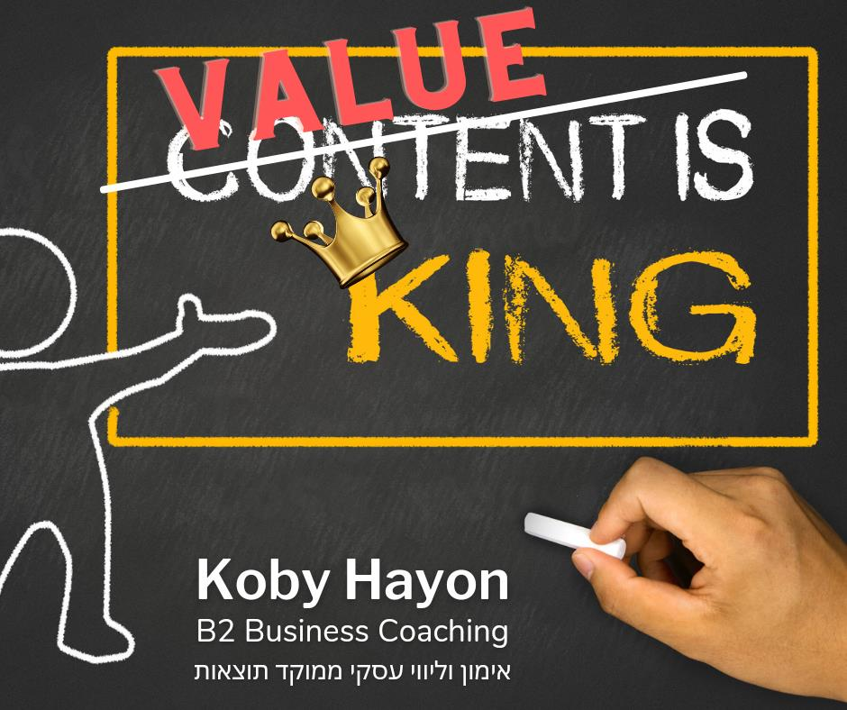
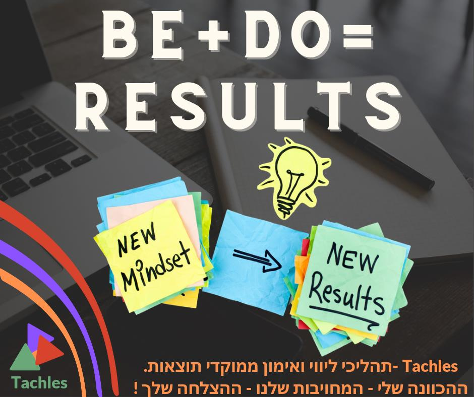

בית › מאמרים
מאמרים
מאמרים וטיפים
מאמרים שכתבתי מתוך הניסיון בליווי עסקים וארגונים: שיווק, בינה מלאכותית, תמחור, ניהול והצלחה.
לינקדאין ושיווק
כך מקבלים תוצאות מלינקדאין, משפכי שיווק ותוכן שעובד.
 לינקדאין ושיווק · 3 דק׳ קריאהמה המטרה שלכם בלינקדאין? שיטת העבודה בלינקדאיןהשאלה הכי משמעותית שחייבת להישאל בכל פעם שאתם נכנסים לאתר או לאפליקציה של לינקדאין. המטרה חייבת להיות לנגד עיניכם כל הזמן, גלישה ללא מטרה מוגדרת…
לינקדאין ושיווק · 3 דק׳ קריאהמה המטרה שלכם בלינקדאין? שיטת העבודה בלינקדאיןהשאלה הכי משמעותית שחייבת להישאל בכל פעם שאתם נכנסים לאתר או לאפליקציה של לינקדאין. המטרה חייבת להיות לנגד עיניכם כל הזמן, גלישה ללא מטרה מוגדרת… לינקדאין ושיווק · 2 דק׳ קריאהמהי אסטרטגיית הפעולה הנכונה ברשת הלינקדאין?אז איך פועלים בלינקדאין ? מה האסטרטגיה שתיצור לנו פניות ? שאלה משמעותית שהרי כולנו באנו ללינקדאין כדי להתחבר ולעשות יחד עסקים.
לינקדאין ושיווק · 2 דק׳ קריאהמהי אסטרטגיית הפעולה הנכונה ברשת הלינקדאין?אז איך פועלים בלינקדאין ? מה האסטרטגיה שתיצור לנו פניות ? שאלה משמעותית שהרי כולנו באנו ללינקדאין כדי להתחבר ולעשות יחד עסקים. לינקדאין ושיווק · 3 דק׳ קריאהטיפים להצלחה בלינקדאין - למה לא להשתמש בבוטים ואוטומציותזהירות בוטים לפניך... למה אני לא משתמש בבוטים
לינקדאין ושיווק · 3 דק׳ קריאהטיפים להצלחה בלינקדאין - למה לא להשתמש בבוטים ואוטומציותזהירות בוטים לפניך... למה אני לא משתמש בבוטים
לינקדאין ושיווק · 3 דק׳ קריאההפייסבוקאידה של לינקדאין - לאן תוביל המגמה?הגיע הזמן שנדבר על זה ! הפייסבוקיאדה של לינקדאין.... מגמה מטרידה שמתרחשת מול עינינו ומתגברת ככל שיותר ויותר אנשים מגלים את היתרונות המשמעותיים של…לינקדאין ושיווק · 1 דק׳ קריאהאיך להפוך פוסט לויראלי? טיפים פרקטייםאיך להפוך משהו לויראלי ? האמת שלא צריך הרבה... רק פאנצ' טוב, מדוייק. ועוד כמה טיפים שאני כותב בסוף הפוסט....לינקדאין ושיווק · 1 דק׳ קריאהשתי הפעולות שתיצורנה לכם הפניות מהלינקדאיןמעורבות וחתירה למגע, שתי דרכי פעולה שתיצורנה לכם תוצאות מצויינות בלינקדאין: מעורבות היא השיח שלכם עם קהל היעד לאמור להיות פעיל, מגיב ומעניין. אנשים… לינקדאין ושיווק · 2 דק׳ קריאהאז מה זה בכלל "משפך שיווקי"?אחד הדברים שאני הכי אוהב לבנות לעסקים הוא משפך שיווקי, כלי עוצמתי שמשמעו שיטה סדורה ליצירת פניות של מתעניינים למוצר או השירות של העסק, אבל עצם הפנייה…
לינקדאין ושיווק · 2 דק׳ קריאהאז מה זה בכלל "משפך שיווקי"?אחד הדברים שאני הכי אוהב לבנות לעסקים הוא משפך שיווקי, כלי עוצמתי שמשמעו שיטה סדורה ליצירת פניות של מתעניינים למוצר או השירות של העסק, אבל עצם הפנייה…
לינקדאין ושיווק · 2 דק׳ קריאהרוצים לגדול? תחשבו כמו הגדולים"קובי, אני רוצה לגדול, להעיף את העסק קדימה"התחלה של פגישה לפני תהליך ליווי. האמת ? התחלה טובה.התחלה שמעידה על מיקוד ורצון להתפתח.אני אוהב התחלות כאלו…
לינקדאין ושיווק · 2 דק׳ קריאההתוכן הוא המלך? יש לי הפתעה בשבילכם. לא!1996, ביל גייטס חורט את המשפט האלמותי "התוכן הוא המלך" על דפי הרשת - אנשים אוהבים לקנות אבל לא אוהבים שמוכרים להם, תנו להם תוכן והם יתחברו אליכם ואז…בינה מלאכותית ואוטומציה
איך בינה מלאכותית ואוטומציות משנות את העסקים.
 בינה מלאכותית ואוטומציה · 2 דק׳ קריאהרשמת כבר את העסק שלכם בצאט ג' פי טי? אל תפספסו...משווקים ברשת ? קבלו הפתעה מבית GPTיכול להיות ששיחת המכירה הראשונה עם הלקוח הבא שלכם תתקיים עוד לפני שתדעו שהוא מתעניין בכם. הוא ישאל שאלות, יבדוק…
בינה מלאכותית ואוטומציה · 2 דק׳ קריאהרשמת כבר את העסק שלכם בצאט ג' פי טי? אל תפספסו...משווקים ברשת ? קבלו הפתעה מבית GPTיכול להיות ששיחת המכירה הראשונה עם הלקוח הבא שלכם תתקיים עוד לפני שתדעו שהוא מתעניין בכם. הוא ישאל שאלות, יבדוק… בינה מלאכותית ואוטומציה · 2 דק׳ קריאהצ'אט ג'י פי טי זה זכר או נקבה?יכול להיות ששני אנשים ישאלו את ChatGPT בדיוק את אותה שאלה, אבל יקבלו תשובות שונות רק בגלל שאחד פונה אליו בלשון זכר והשני בלשון נקבה? מחשבה שלא עזבה…
בינה מלאכותית ואוטומציה · 2 דק׳ קריאהצ'אט ג'י פי טי זה זכר או נקבה?יכול להיות ששני אנשים ישאלו את ChatGPT בדיוק את אותה שאלה, אבל יקבלו תשובות שונות רק בגלל שאחד פונה אליו בלשון זכר והשני בלשון נקבה? מחשבה שלא עזבה… בינה מלאכותית ואוטומציה · 1 דק׳ קריאהאוטומציות- הדרך ליעל את העסק שלכםאוטומציות: הדבר הגדול הבא בעולם העסקים, מייעלות, משפרות ביצועים, חוסכות זמן, כמאמן שעובד און ליין כבר שנים רבות, אוטומציות הן "הרמה להנחתה" וממש…
בינה מלאכותית ואוטומציה · 1 דק׳ קריאהאוטומציות- הדרך ליעל את העסק שלכםאוטומציות: הדבר הגדול הבא בעולם העסקים, מייעלות, משפרות ביצועים, חוסכות זמן, כמאמן שעובד און ליין כבר שנים רבות, אוטומציות הן "הרמה להנחתה" וממש…תמחור וכסף
כמה לדרוש, איך לתמחר, ולמה הכסף נעלם.
 תמחור וכסף · 1 דק׳ קריאהכמה כסף אפשר לדרוש על השירות שלי?מכירים את המשפט "וואוו, זה יקר" ? קבלו ספור: לנמל נגררה אוניית משא עם תקלת מנוע שהשביתה את האוניה, כל יום השבתה כרוך בהפסד גדול מאד לבעלי האונייה.…
תמחור וכסף · 1 דק׳ קריאהכמה כסף אפשר לדרוש על השירות שלי?מכירים את המשפט "וואוו, זה יקר" ? קבלו ספור: לנמל נגררה אוניית משא עם תקלת מנוע שהשביתה את האוניה, כל יום השבתה כרוך בהפסד גדול מאד לבעלי האונייה.… תמחור וכסף · 2 דק׳ קריאהכמה כסף אפשר לקבל על שלוש דפיקות עם פטיש?מה המחיר הראוי לעבודה שלנו ? קבלו ספור: לנמל נגררה אוניית משא עם תקלת מנוע שהשביתה את האוניה, כל יום השבתה כרוך בהפסד גדול מאד לבעלי האונייה. הצוות…תמחור וכסף · 2 דק׳ קריאהאריה או חתול? מה קובע כמה נדרוש כתשלום?"בכמה לתמחר את השירות שלי ? " שאלה שעולה הרבה מאד בקרב מאמנים, מטפלים ונותני שירותים שבהם המרכיב העיקרי עד המוחלט הינו זמנו של נותן השירות ולא כולל…
תמחור וכסף · 2 דק׳ קריאהכמה כסף אפשר לקבל על שלוש דפיקות עם פטיש?מה המחיר הראוי לעבודה שלנו ? קבלו ספור: לנמל נגררה אוניית משא עם תקלת מנוע שהשביתה את האוניה, כל יום השבתה כרוך בהפסד גדול מאד לבעלי האונייה. הצוות…תמחור וכסף · 2 דק׳ קריאהאריה או חתול? מה קובע כמה נדרוש כתשלום?"בכמה לתמחר את השירות שלי ? " שאלה שעולה הרבה מאד בקרב מאמנים, מטפלים ונותני שירותים שבהם המרכיב העיקרי עד המוחלט הינו זמנו של נותן השירות ולא כולל… תמחור וכסף · 4 דק׳ קריאהכשהכסף נוזל בין האצבעות כמו מים - "עבדתי כל החודש, איפה הכסף?"בואו נדבר על כסף, בעצם - על "אין מספיק כסף",
תמחור וכסף · 4 דק׳ קריאהכשהכסף נוזל בין האצבעות כמו מים - "עבדתי כל החודש, איפה הכסף?"בואו נדבר על כסף, בעצם - על "אין מספיק כסף", תמחור וכסף · 1 דק׳ קריאהרוצים לגבות 1000 ₪ לשעה? כמה באמת תרוויחו? חומר למחשבהוואו, כמה יקר ! 1000 שקל לשעה: - גביתם 1000 ₪ - תורידו מע"מ נשאר 855 ₪ - נשאר 855 ₪ - תורידו 23% מס הכנסה - 650 ₪ - נשאר 650 ₪ - תורידו 20% בט"ל -…
תמחור וכסף · 1 דק׳ קריאהרוצים לגבות 1000 ₪ לשעה? כמה באמת תרוויחו? חומר למחשבהוואו, כמה יקר ! 1000 שקל לשעה: - גביתם 1000 ₪ - תורידו מע"מ נשאר 855 ₪ - נשאר 855 ₪ - תורידו 23% מס הכנסה - 650 ₪ - נשאר 650 ₪ - תורידו 20% בט"ל -…ניהול וצמיחה עסקית
תוכנית, מיקוד, ניהול זמן ועקביות.
ניהול וצמיחה עסקית · 3 דק׳ קריאהמה שהפך את ח"א לטוב בעולם יהפוך את העסק שלך למצליח"כשלון" מילה שהרבה אנשים אוהבים "לכבס", מתפתלים כדי לא לקרוא לילד בשמו. מנסים להסתיר מעצמם את העובדה שכישלון הוא חלק מהדרך, שלא כל מה שאנחנו עושים… ניהול וצמיחה עסקית · 2 דק׳ קריאהבניית תמונת ניצחון - השלב הראשון בתכנית העסקיתהשלב הראשון בבניית תכנית עסקית, הוא ליצור את תמונת הניצחון שלי, לדמיין וליצור לעצמנו את התמונה הרחבה של החיים שלנו כאשר נגשים את החלום שלנו ונהייה…
ניהול וצמיחה עסקית · 2 דק׳ קריאהבניית תמונת ניצחון - השלב הראשון בתכנית העסקיתהשלב הראשון בבניית תכנית עסקית, הוא ליצור את תמונת הניצחון שלי, לדמיין וליצור לעצמנו את התמונה הרחבה של החיים שלנו כאשר נגשים את החלום שלנו ונהייה… ניהול וצמיחה עסקית · 1 דק׳ קריאהותוכנית עסקית כבר יש לך? למה צריך תוכנית עסקית?תוכנית עסקית... מהם הערכים שמובילים את העסק שלי ? מטרות... יעדים... תוכנית פעולה... מחוייבות, תכנון, בקרה ותיקון מתמיד.
ניהול וצמיחה עסקית · 1 דק׳ קריאהותוכנית עסקית כבר יש לך? למה צריך תוכנית עסקית?תוכנית עסקית... מהם הערכים שמובילים את העסק שלי ? מטרות... יעדים... תוכנית פעולה... מחוייבות, תכנון, בקרה ותיקון מתמיד. ניהול וצמיחה עסקית · 3 דק׳ קריאהזהירות ❗❗❗ העסק שלי הוא אני ❤יש קסם מופלא בגישה שגורסת ש"העסק שלי זה אני", גישה המתאימה בעיקר לעסקים קטנים ובינוניים, בהם המרכיב הדומיננטי היא האישיות של בעל העסק. זה נכון לא רק…
ניהול וצמיחה עסקית · 3 דק׳ קריאהזהירות ❗❗❗ העסק שלי הוא אני ❤יש קסם מופלא בגישה שגורסת ש"העסק שלי זה אני", גישה המתאימה בעיקר לעסקים קטנים ובינוניים, בהם המרכיב הדומיננטי היא האישיות של בעל העסק. זה נכון לא רק… ניהול וצמיחה עסקית · 3 דק׳ קריאהמיקור חוץ בחברות וארגונים - כדאי או לא כדאיצה"ל מוציא למיקור חוץ את תהליך המיון של המועמדים לשירות בטחון, זו לא הפעם הראשונה שאנו נתקלים שתחומים שצה"ל מוציא החוצה: תחום הבנוי, ההסעדה, הובלות…ניהול וצמיחה עסקית · 1 דק׳ קריאהטיפ להצלחה - כבו את "גזלני הזמן"טיפ של בוקר - "גזלני הזמן": הטלפון הסלולרי מייעל את העבודה שלנו ומנגיש לנו את המידע והאפליקציות הדרושות לנו לעבודה. יחד עם זאת הוא מביא איתו את…ניהול וצמיחה עסקית · 1 דק׳ קריאהקוביות הזמן - שיטה אפקטיבית למיקוד במטרות והיעדיםמיקוד במטרות, אחד הגורמים המשמעותיים להצלחה בחיים ובעסקים. מיקוד איכותי משמעו שכל פעולה שאנחנו עושים בעסק משרתת ומקדמת את המטרות שהגדרנו לעסק.
ניהול וצמיחה עסקית · 3 דק׳ קריאהמיקור חוץ בחברות וארגונים - כדאי או לא כדאיצה"ל מוציא למיקור חוץ את תהליך המיון של המועמדים לשירות בטחון, זו לא הפעם הראשונה שאנו נתקלים שתחומים שצה"ל מוציא החוצה: תחום הבנוי, ההסעדה, הובלות…ניהול וצמיחה עסקית · 1 דק׳ קריאהטיפ להצלחה - כבו את "גזלני הזמן"טיפ של בוקר - "גזלני הזמן": הטלפון הסלולרי מייעל את העבודה שלנו ומנגיש לנו את המידע והאפליקציות הדרושות לנו לעבודה. יחד עם זאת הוא מביא איתו את…ניהול וצמיחה עסקית · 1 דק׳ קריאהקוביות הזמן - שיטה אפקטיבית למיקוד במטרות והיעדיםמיקוד במטרות, אחד הגורמים המשמעותיים להצלחה בחיים ובעסקים. מיקוד איכותי משמעו שכל פעולה שאנחנו עושים בעסק משרתת ומקדמת את המטרות שהגדרנו לעסק. ניהול וצמיחה עסקית · 1 דק׳ קריאה80 - 20 - למצוא את ה "כן" למרות ה "לא"80 - 20 - הידוע גם בשמו "פארטו". 80% מה.... יתנו לכם 20% מה.... והפעם מזוית קצת שונה: 80% מפעולות השיווק יוצרות "לא" 20% מהפעולות יוצרות "כן". אז מה…
ניהול וצמיחה עסקית · 1 דק׳ קריאה80 - 20 - למצוא את ה "כן" למרות ה "לא"80 - 20 - הידוע גם בשמו "פארטו". 80% מה.... יתנו לכם 20% מה.... והפעם מזוית קצת שונה: 80% מפעולות השיווק יוצרות "לא" 20% מהפעולות יוצרות "כן". אז מה… ניהול וצמיחה עסקית · 2 דק׳ קריאההדשא של השכן ירוק יותר - על עקביות בעסקיםאומרים שהדשא הבריטי הוא הדשא הירוק בעולם, מטופח, מדהים, נראה ללא רבב. אחד הספורים המפורסמים הוא על שני שכנים, לאחד דשא בריטי כזה ירוק ומדהים, לשני…ניהול וצמיחה עסקית · 2 דק׳ קריאהאוהבים פיצה? מתכון להצלחה בעסקיםרוב בני האדם אוהבים אוכל איטלקי, בעיקר את האוכל של דרום איטליה, תמיד תהיתי מה הסוד שלו, ואז הבנתי... ארבעה מרכיבים - טבעיות, פשטות, דיוק, כבוד.
ניהול וצמיחה עסקית · 2 דק׳ קריאההדשא של השכן ירוק יותר - על עקביות בעסקיםאומרים שהדשא הבריטי הוא הדשא הירוק בעולם, מטופח, מדהים, נראה ללא רבב. אחד הספורים המפורסמים הוא על שני שכנים, לאחד דשא בריטי כזה ירוק ומדהים, לשני…ניהול וצמיחה עסקית · 2 דק׳ קריאהאוהבים פיצה? מתכון להצלחה בעסקיםרוב בני האדם אוהבים אוכל איטלקי, בעיקר את האוכל של דרום איטליה, תמיד תהיתי מה הסוד שלו, ואז הבנתי... ארבעה מרכיבים - טבעיות, פשטות, דיוק, כבוד.
ניהול וצמיחה עסקית · 2 דק׳ קריאהבניית תמונת ניצחון - השלב הראשון בתכנית העסקיתהשלב הראשון בבניית תכנית עסקית, הוא ליצור את תמונת הניצחון שלי, לדמיין וליצור לעצמנו את התמונה הרחבה של החיים שלנו כאשר נגשים את החלום שלנו ונהייה…ניהול וצמיחה עסקית · 1 דק׳ קריאהותוכנית עסקית כבר יש לך? למה צריך תוכנית עסקית?תוכנית עסקית... מהם הערכים שמובילים את העסק שלי ? מטרות... יעדים... תוכנית פעולה... מחוייבות, תכנון, בקרה ותיקון מתמיד.ניהול וצמיחה עסקית · 3 דק׳ קריאהזהירות ❗❗❗ העסק שלי הוא אני ❤יש קסם מופלא בגישה שגורסת ש"העסק שלי זה אני", גישה המתאימה בעיקר לעסקים קטנים ובינוניים, בהם המרכיב הדומיננטי היא האישיות של בעל העסק. זה נכון לא רק…ניהול וצמיחה עסקית · 3 דק׳ קריאהמיקור חוץ בחברות וארגונים - כדאי או לא כדאיצה"ל מוציא למיקור חוץ את תהליך המיון של המועמדים לשירות בטחון, זו לא הפעם הראשונה שאנו נתקלים שתחומים שצה"ל מוציא החוצה: תחום הבנוי, ההסעדה, הובלות…ניהול וצמיחה עסקית · 1 דק׳ קריאהטיפ להצלחה - כבו את "גזלני הזמן"טיפ של בוקר - "גזלני הזמן": הטלפון הסלולרי מייעל את העבודה שלנו ומנגיש לנו את המידע והאפליקציות הדרושות לנו לעבודה. יחד עם זאת הוא מביא איתו את…ניהול וצמיחה עסקית · 1 דק׳ קריאהקוביות הזמן - שיטה אפקטיבית למיקוד במטרות והיעדיםמיקוד במטרות, אחד הגורמים המשמעותיים להצלחה בחיים ובעסקים. מיקוד איכותי משמעו שכל פעולה שאנחנו עושים בעסק משרתת ומקדמת את המטרות שהגדרנו לעסק.ניהול וצמיחה עסקית · 1 דק׳ קריאה80 - 20 - למצוא את ה "כן" למרות ה "לא"80 - 20 - הידוע גם בשמו "פארטו". 80% מה.... יתנו לכם 20% מה.... והפעם מזוית קצת שונה: 80% מפעולות השיווק יוצרות "לא" 20% מהפעולות יוצרות "כן". אז מה…ניהול וצמיחה עסקית · 2 דק׳ קריאההדשא של השכן ירוק יותר - על עקביות בעסקיםאומרים שהדשא הבריטי הוא הדשא הירוק בעולם, מטופח, מדהים, נראה ללא רבב. אחד הספורים המפורסמים הוא על שני שכנים, לאחד דשא בריטי כזה ירוק ומדהים, לשני…ניהול וצמיחה עסקית · 2 דק׳ קריאהאוהבים פיצה? מתכון להצלחה בעסקיםרוב בני האדם אוהבים אוכל איטלקי, בעיקר את האוכל של דרום איטליה, תמיד תהיתי מה הסוד שלו, ואז הבנתי... ארבעה מרכיבים - טבעיות, פשטות, דיוק, כבוד.ליווי ואימון
איך עובד תהליך ליווי עסקי ואיך בוחרים יועץ.
ליווי ואימון · 1 דק׳ קריאהאז איך זה עובד ליווי עסקי? איך מתחילים?אז איך זה עובד באמת ? מתחילים בשיחת טלפון קצרה, מבינים אם אנחנו בכיוון, קצת עליכם, על העסק, עובדות. קובעים פגישה או שיחת זום.ליווי ואימון · 1 דק׳ קריאההחיבור האישי - המפתח להצלחה בתהליך ליווימה הכי חשוב בעיניי כדי שתהליך ליווי יצליח ? החיבור בין האנשים. ❤ תנאי הכרחי להצלחה.ליווי ואימון · 2 דק׳ קריאהסליחה, אתה מעשן? תובנות על איך לבחור יועץתמיד יהיה מישהו שיידע לתת לכם עצה מה יותר נכון לכם לעשות בחיים בכלל ובעסקים בפרט.
הצלחה וחשיבה
ניפוץ מגבלות, כישלון והדרך להצלחה.
 הצלחה וחשיבה · 2 דק׳ קריאהאיך מנפצים את תקרת הזכוכית?רוב בני האדם רוצים לנפץ את המגבלות שלהם, השאלה המשמעותית היא איך נוצרות המגבלות, שהרי אם נבין איך נוצרו נוכל לנפץ אותן,
הצלחה וחשיבה · 2 דק׳ קריאהאיך מנפצים את תקרת הזכוכית?רוב בני האדם רוצים לנפץ את המגבלות שלהם, השאלה המשמעותית היא איך נוצרות המגבלות, שהרי אם נבין איך נוצרו נוכל לנפץ אותן, הצלחה וחשיבה · 2 דק׳ קריאהלפרוץ את המגבלות - פיזי מנטאלי ומה שבינהםרוב בני האדם רוצים לנפץ את המגבלות שלהם, השאלה המשמעותית היא איך נוצרות המגבלות, שהרי אם נבין איך נוצרו נוכל לנפץ אותן, ואחרי שננפצן - השמיים אינם…
הצלחה וחשיבה · 2 דק׳ קריאהלפרוץ את המגבלות - פיזי מנטאלי ומה שבינהםרוב בני האדם רוצים לנפץ את המגבלות שלהם, השאלה המשמעותית היא איך נוצרות המגבלות, שהרי אם נבין איך נוצרו נוכל לנפץ אותן, ואחרי שננפצן - השמיים אינם… הצלחה וחשיבה · 2 דק׳ קריאהנכשלתי פעם אחר פעם - זה סוד ההצלחה שלי"נכשלתי פעם אחר פעם, זה גם סוד ההצלחה שלי בחיים" - מייקל ג'ורדן.
הצלחה וחשיבה · 2 דק׳ קריאהנכשלתי פעם אחר פעם - זה סוד ההצלחה שלי"נכשלתי פעם אחר פעם, זה גם סוד ההצלחה שלי בחיים" - מייקל ג'ורדן. הצלחה וחשיבה · 2 דק׳ קריאהסוד ההצלחה - לחלום גבוה ולהתחבר לקרקעלחלום - להיות בהוויה חסרת גבולות, בה אתם והעסק שלכם יכולים להיות מי שאתם באמת ראויים להיות. לעוף הכי גבוה שכנפי הדמיון יכולים להכיל ולנסוק, כאשר אני…הצלחה וחשיבה · 2 דק׳ קריאהלחפש את הזהב או להיות אלכימאי? מה המתכון להצלחה?רוב בני האדם רוצים "זהב" בחיים, מהו זהב ? אושר, שפע, אהבה, הצלחה, ברכה, כסף... יש שתי גישות כיצד להכניס זהב לחיים ולעסקים", יש "מחפשי זהב" - ויש…
הצלחה וחשיבה · 2 דק׳ קריאהסוד ההצלחה - לחלום גבוה ולהתחבר לקרקעלחלום - להיות בהוויה חסרת גבולות, בה אתם והעסק שלכם יכולים להיות מי שאתם באמת ראויים להיות. לעוף הכי גבוה שכנפי הדמיון יכולים להכיל ולנסוק, כאשר אני…הצלחה וחשיבה · 2 דק׳ קריאהלחפש את הזהב או להיות אלכימאי? מה המתכון להצלחה?רוב בני האדם רוצים "זהב" בחיים, מהו זהב ? אושר, שפע, אהבה, הצלחה, ברכה, כסף... יש שתי גישות כיצד להכניס זהב לחיים ולעסקים", יש "מחפשי זהב" - ויש…
הצלחה וחשיבה · 1 דק׳ קריאהBe DO = Results - המתכון להצלחהיצרת תוצאות מדהימות בחיים, הטבע האנושי הוא לרצות יותר, לעלות עוד קומה, לצמוח, להתפתח, זו תהייה טעות להמשיך לפעול באותה דרך, לעשות שוב ושוב את אותם…